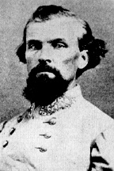

|

|

|
|
|
Businessman, planter, slave trader, politician, CSA General,
First General Wizard of the Ku Klux Klan, students of the
Civil War have long regarded Confederate cavalry commander
Nathan Bedford Forrest as both a military genius and as one
of the most controversial figures of the Civil War.
Although overrated in his military skills, Forrest's cavalry
consistently represented a major thorn in the side of Union
forces. At one point, General Sherman exclaimed that Union
soldiers must capture and kill Forrest even "if it costs ten
thousand lives and breaks the treasury." At the end of the
War, Forrest noted that he had killed thirty men in hand to
hand combat while having had only twenty-nine horses shout
out from under him. Forrest noted with pride that he
remained one horse ahead.
Forrest was born in Tennessee and moved to Mississippi at
the age of twenty-one. His roots were in the southern
yeomanry, his education scanty, but his ambitious nature and
his activities as a slave trader and planter brought him a
large fortune. Immediately upon Tennessee's secession from
the Union, the 40-year old Forrest enlisted as a private in
the seventh Tennessee cavalry. However, under protest from
no less of an authority than the Governor of Tennessee,
Forrest was given the rank of lieutenant colonel and the
opportunity to raise his own cavalry battalion. Forrest
recruited and equipped a command at his own expense.
Forrest distinguished himself in battles at Fort Donelson
and Shiloh, both Union victories, and in a raid directed at
Union forces in the area of Murfreesboro, Tennessee. In late
1862, Forrest and his men devoted their energies to
disrupting Grant's line of supply in west Tennessee. It was
this raid, along with two others later that year, which made
Forrest a hero throughout the South. His simple motto, "get
there first with the most men," belied his growing
reputation as a brilliant and daring commander who could
strike fear into the heart of numerically superior forces.
In spite of Forrest's successful raids in Tennessee, the
Confederate forces led by Braxton Bragg retreated from the
area. Forrest resented Bragg's decision to evacuate
Tennessee. Moreover, he swore that if he ever met Bragg he
would kill him. Because of the mutual animosities between
these men, Jefferson Davis gave Forrest an independent
command in Mississippi.
In April of 1864, Forrest and his men attacked Fort
Pillow in Tennessee. The sacking of Fort Pillow marks the
most controversial moment in Forrest's career. On April
12th, Confederate marksmen had surrounded the Fort and made
life extremely difficult for the Union soldiers inside.
After Forrest's men had control of the perimeter of the
Fort, Forrest offered the union commander an opportunity to
surrender. Forrest also stated that he could not be
responsible for the safety of the Union soldiers if their
commander refused. Since no surrender seemed forthcoming,
Forrest's men seized the Fort. In the ensuing melee, the
262 black Tennessee Unionists who composed the majority of
the garrison suffered the most. Forrest's soldiers took on
fifty-eight black prisoners; they killed the remainder, many
of whom tried to surrender.
In June of 1864, Forrest was victorious in two notable
battles waged in the northeastern part of Mississippi.
Historians generally regard these battles, known as Brice's
Crossroads and the Battle of Tupelo, as Forrest's
masterpieces. In the latter battle, Forrest was injured and
unable to lead his men from horseback. Instead, Forrest
moved about the battlefield in a horsecart. From the
horsecart, he gave orders that kept his men one step ahead
of all Union movements.
After the battle at Tupelo, Forrest and his men ranged
over northern Alabama and Tennessee harassing Union
soldiers, raiding various supply depots, and destroying
railroads. Forrest also accompanied Confederate General
John Bell Hood in his unsuccessful attempt to take back
Tennessee for the Confederacy. When Hood's men retreated
from Nashville, Forrest displayed his ferocity in protecting
the Confederate retreat.
Forrest was promoted to Lieutenant General in February of
1865 and spent the last months of the War trying to put
together a force of men in Mississippi. However, Union
cavalry outnumbered his command to such an extent that it
was no longer possible to engage them successfully. Forrest
finally surrendered his forces in May of 1865, a little over
a month after Appomattox. "I went into the army worth a
million and a half dollars," he said, "and came out a
beggar."
Forrest's post-war career is nearly as controversial as
his wartime career. Forrest tried to regain his fortune
through railroad building and insurance enterprises. He was
not successful. In 1867, Forrest became the first Grand
Wizard of the Ku Klux Klan. Forrest demanded that the Klan
operate to defend the people of Tennessee, that it only use
violence in self-defense, and that it keep within the bounds
of chivalry. Because he was unable to control Klan activity
within those guidelines, Forrest disbanded the organization
and gave up his command. His disbandment order had little
effect outside Tennessee, and the Klan has continued to
exist in one form or another ever since. In 1871, Congress
called an uncooperative Forrest to testify concerning his
involvement with the Klan.
In his last years, Forrest's physical health
deteriorated, in particular due to diabetes. He died in
Memphis on October 29, 1877 at the age of fifty-six.
Source: Joan Waugh, ed., Facts on File Encyclopedia of American
History: Civil War and Reconstruction, 1856 to 1869 (New York: Facts on
File, 2003), 133-134.
|